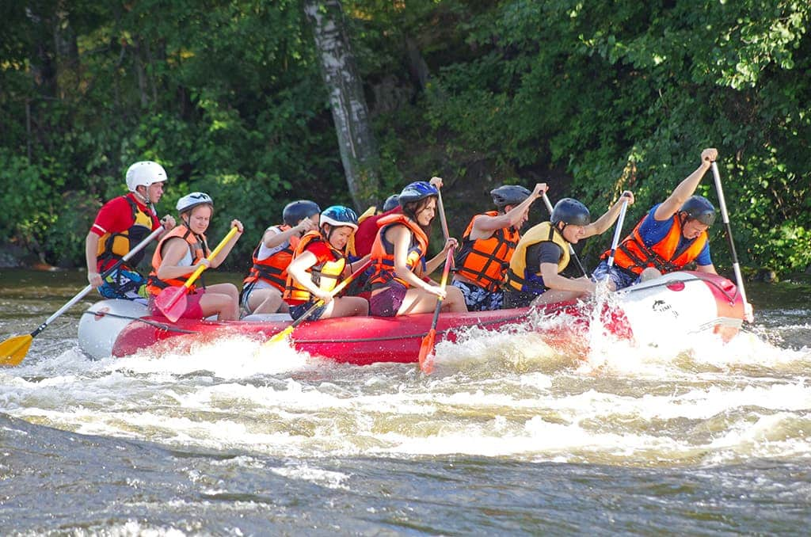

At Rapid Trails Rafting, our mission is to deliver unforgettable, safe, and exhilarating white water rafting experiences for outdoor enthusiasts of all skill levels. Guided by expert river navigators, we are dedicated to preserving our natural waterways, fostering teamwork, and creating lasting memories on every rapid we conquer

Rapid Trails Rafting
History
Founded in 1998 by a group of passionate river guides, Rapid Trails Rafting began with just two rafts and a commitment to unforgettable outdoor adventure. Over the past two decades, we have grown from a local river outfit into one of the region's premier white water rafting companies, guiding over 50,000 thrill-seekers down wild rivers while setting the highest standards for safety and environmental stewardship.